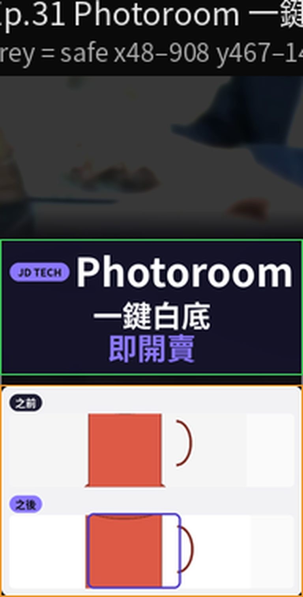
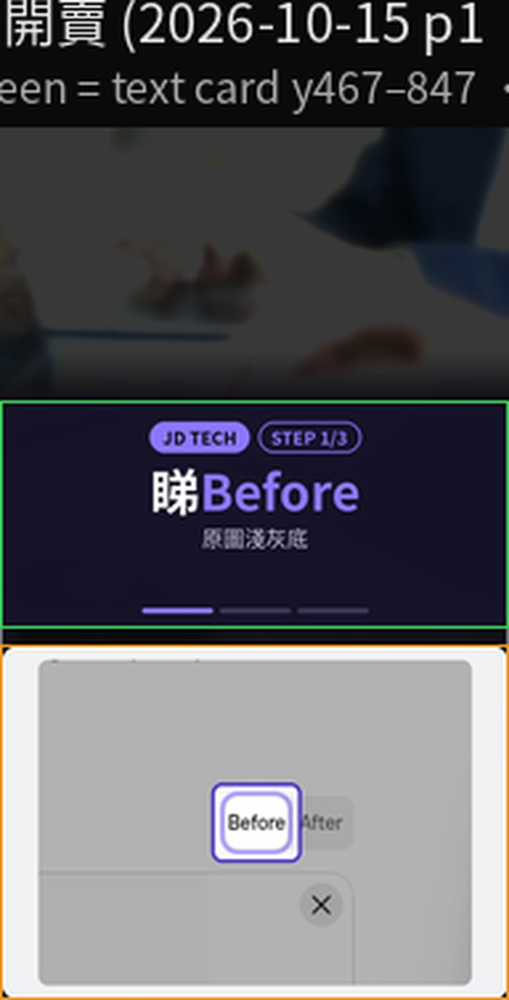
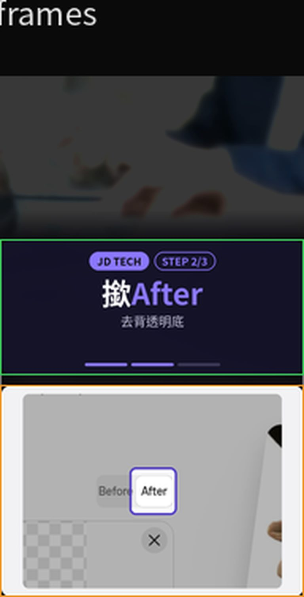
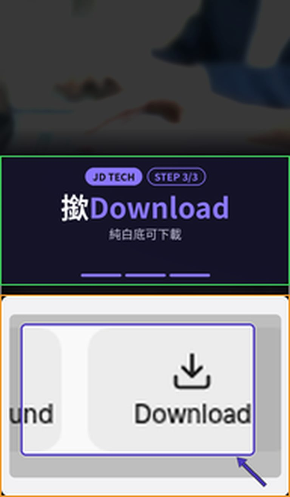

Carousell 放售相背景雜，主體唔突出。第31集用 Photoroom 網頁工具，免登入：開 Background Remover、撳 After 睇去背，再去 White Background 出純白底，撳 Download。示範係一隻虛構紅杯，無商戶品牌。
Reel 一句講晒：Photoroom｜一鍵白底／即開賣
唔係真實商品：示範紅杯全屬虛構，無商戶品牌。客人相、單據、有樣相唔好上載去第三方。免費額度同解像度以你當日畫面為準。呢則唔係 48 小時新功能。AI Shadows 要登入先用，本則只用免登入白底。
你會學到
- 點樣開 photoroom.com 的 Background Remover，上載產品相，先睇 Before
- 點樣撳 After，分清透明格仔底同純白底
- 點樣用 White Background 睇白底，再撳 Download
開始前準備
- 瀏覽器開 Background Remover。本集示範冇登入、冇裝 App
- 一張主體同背景分得開嘅產品相。示範用虛構紅杯、淺灰底，無商標、無商戶名
- 客人相、單據、有樣相留喺自己部機。上載即交俾 Photoroom 處理，工具頁有私隱說明

3 步做法
-
睇 Before：開 Background Remover，上載產品相。畫面掣名係英文 Before／After。未撳 After 之前，先停喺 Before，確認件貨、色水、有冇拍到你唔想上載嘅紙張或者人。
示範紅杯係淺灰底。你自己用就換上真貨相，但唔好連單據、地址、客人一齊入鏡。
呢頁用公開工具，唔使登入。登入先用到嘅編輯器（app.photoroom.com）係另一條路，本集唔行。

真實畫面（2026-10-14 自行截圖）：撳 After 之前。Before 仍然係原圖淺灰底。 -
撳 After：撳 After，睇去背。透明底會見到格仔。格仔代表背景已經攞走，尚未鋪上純白。
邊緣如果咬到杯身、或者留低桌面一角，就唔好當完成。呢步仍然係 Background Remover。
見到要登入先用到嘅 AI Shadows，跳過。本則只用免登入白底。

真實畫面（2026-10-14 自行截圖）：撳 After。去背之後係格仔透明底，未係白底。 -
撳 Download：開 White Background，用同一張產品相出純白底。見到杯後面係白、唔再係格仔，先撳 Download。
官方工具頁寫呢個白底係 RGB 255,255,255。免費可以用；高清下載同進階功能可能要升級，以你當日畫面為準。頁面亦寫到免費先試一張相。
下載之前再睇一次：件貨係咪你要賣嗰件，有冇多咗商標或者別人貨。Carousell 或者其他平台嘅尺寸、張數，跟平台當日規格。

真實畫面（2026-10-14 自行截圖）：純白底。Download 掣喺畫面。示範紅杯虛構。
常見錯誤／注意事項
- 格仔底當白底上架：After 見到格仔，代表透明底。放售相要白底，就要去 White Background，見到純白先 Download。
- 撳 AI Shadows：2026-10-14 實測，AI Shadows 會要登入。本則唔用，只行免登入白底。
- 上載客人或者單據：電話、地址、收據、有樣相留喺自己部機。示範紅杯無商戶品牌，亦唔係真實在售貨。
- 當免費就係無限高清：White Background 工具頁寫可以免費用，亦寫到高清下載同進階功能可能要升級。額度以當日畫面為準。
- 當 48 小時新功能：Background Remover、Before／After、White Background、Download 係而家用緊嘅公開工具。介面改名以當日網站為準。
示範紅杯虛構，無商戶品牌。客人相、單據、有樣相唔好上載。AI Shadows 要登入，本則只用免登入白底。
香港用戶留意
用瀏覽器開上面兩條工具頁就得，示範冇註冊、冇裝 App。掣名係英文：Before、After、Download。Carousell 放售相嘅尺寸同張數，跟平台當日要求；呢頁只示範點樣由雜底變成白底。
官方說明
- Background Remover（Photoroom 工具頁）
2026-10-15 再打開：上載 JPEG 或 PNG，AI 去背，可以留透明、轉白或者揀顏色，再下載 PNG、JPEG 或 WEBP。本集畫面掣名對齊 Before／After - White Background（Photoroom 工具頁）
2026-10-15 再打開：上載產品相，AI 換成純白（頁面寫 RGB 255,255,255），再下載。頁面寫可以免費用，高清同進階功能可能要升級；開頭亦寫到可以免費先試一張相 - Create a design with a white background（Photoroom Help Center）
登入後嘅網頁版（app.photoroom.com）係另一條路：Help 寫要先登入、揀 Space、再揀白色範本。本集冇行呢條，只用上面兩頁公開工具
（工具頁當日打開。逐步畫面係 2026-10-14 自行截圖。介面可能更新，以官方為準）
原帖
睇原 Reel ↗（2026-10-15 發佈）